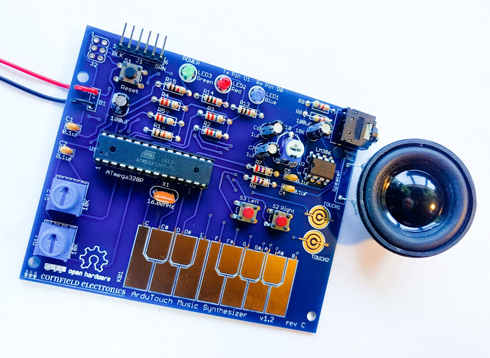

Arduino-compatible music synthesizer

ArduTouch is really just an Arduino Uno clone with a small amplifier & speaker, with a PCB touch keyboard, a couple of extra buttons, and a couple of pots (for playing music and controlling the sounds). The ArduTouch Arduino Library is where the real magic comes from! An ArduTouch library is available for programming in more super nice synthesizer features, and for making your own synthesizers. The library comes with examples (with more to come) that serve as a nice tutorial on how to create your own ArduTouch synthesizers (which are Arduino sketches).
All DB data
- Name: ArduTouch
- Author: Mitch Altman
- Link: https://github.com/maltman23/ArduTouch/tree/master
- Demo: https://www.youtube.com/watch?v=77Z3uCmT7yM
- Picture: ../pics/ardutouch.jpg
- Description: Arduino-compatible music synthesizer
- Notes: ArduTouch is really just an Arduino Uno clone with a small amplifier & speaker, with a PCB touch keyboard, a couple of extra buttons, and a couple of pots (for playing music and controlling the sounds). The ArduTouch Arduino Library is where the real magic comes from! An ArduTouch library is available for programming in more super nice synthesizer features, and for making your own synthesizers. The library comes with examples (with more to come) that serve as a nice tutorial on how to create your own ArduTouch synthesizers (which are Arduino sketches).
- Artifacts: {“Schematic”=>true}{“PCB”=>true}{“BOM”=>true}{“FW”=>true}{“Docs”=>true}{“Enclosure”=>false}
- Tags: DigitalMonophonicArduinoKit
- Level: Newbe
{kind=link}